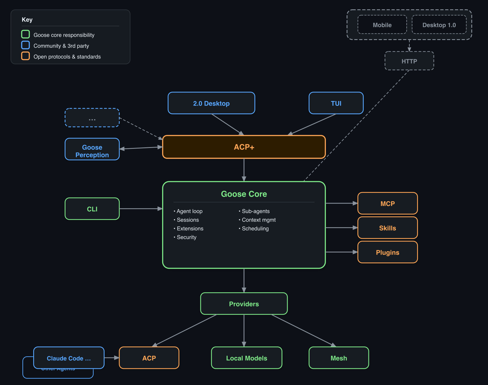

Build on the agent, not around it
Goose is a single compiled binary — agent runtime, model access, tool execution, extensions, sessions — all included.
The SDK lets you embed it, connect to it, and extend it. Build your experience; let Goose handle the hard parts.
Months of plumbing before you ship anything.
Focus on your experience. Goose handles the rest.
One compiled binary. Brew, npm, apt, rpm, Docker, or just download it.

Frontends connect via ACP+ (the protocol). Everything below the protocol layer is handled for you.
3Single compiled Rust binary. Get it however you want:
brew install block-goose-clinpm install @aaif/goose-sdkapt / rpm / .deb / .flatpakghcr.io/.../goosegoose updateThree transports, same protocol:
goose acp, pipe JSONRuns as a daemon, child process, or CLI tool. Your app connects and sends prompts.
JSON-RPC 2.0. The "+" is Goose's extensions beyond the ACP open standard:
ACP+ extensions will be standardised as they prove out.
GooseClient (TypeScript SDK)
→
ACP+ (JSON-RPC)
→
goose binary
→
LLMs + Tools
import { spawn } from "node:child_process";
import { Readable, Writable } from "node:stream";
import { ndJsonStream, PROTOCOL_VERSION } from "@agentclientprotocol/sdk";
import { GooseClient } from "@aaif/goose-sdk";
import { resolveGooseBinary } from "@aaif/goose-sdk/node";
// 1. Spawn the goose binary
const proc = spawn(resolveGooseBinary(), ["acp"], { stdio: ["pipe", "pipe", "ignore"] });
const stream = ndJsonStream(Writable.toWeb(proc.stdin!), Readable.toWeb(proc.stdout!));
// 2. Create the client
const client = new GooseClient(() => ({
sessionUpdate: async (p) => {
if (p.update.sessionUpdate === "agent_message_chunk" && p.update.content.type === "text")
process.stdout.write(p.update.content.text); // stream text to your UI
},
requestPermission: async (p) => ({
outcome: { outcome: "selected", optionId: p.options[0].optionId } // auto-approve
}),
}), stream);
// 3. Initialize, create session, prompt
await client.initialize({ protocolVersion: PROTOCOL_VERSION, clientInfo: { name: "my-app", version: "1.0" }, clientCapabilities: {} });
const session = await client.newSession({ cwd: ".", mcpServers: [], _meta: { provider: "anthropic" } });
await client.prompt({ sessionId: session.sessionId, prompt: [{ type: "text", text: "Hello!" }] });That's it. You have a full agent with tool use, streaming, sessions, and any LLM provider.
5The same GooseClient + @aaif/goose-sdk powers all three:
Tauri + React. Connects via WebSocket.
const stream = createWebSocketStream(wsUrl);
const client = new GooseClient(cb, stream);React Ink. Connects via stdio.
goose acp as child processconst stream = ndJsonStream(stdin, stdout);
const client = new GooseClient(cb, stream);Headless Node.js. Watches screen → updates wiki.
await client.prompt({ sessionId, prompt: [
{ type: "text", text: "Transcribe" },
{ type: "image", data: b64, mimeType: "image/png" },
]});Ways to extend Goose without forking it:
Add tools at runtime via local or remote MCP servers. Goose manages the lifecycle — hot-loadable, no restart.
await client.extMethod(
"_goose/extensions/add", {
sessionId,
name: "my-tool-server",
uri: "http://localhost:8080",
}
);Shell commands or HTTP calls at key agent lifecycle points. Configured in YAML/JSON — no code changes.
Discoverable SKILL.md files with frontmatter. Project-scoped
(.goose/skills/) or global (~/.agents/skills/).
Procedural knowledge the agent loads on demand.
Recipes: Declarative YAML — bundle prompt, extensions, model, parameters. Shareable, deeplink-encodable, schedulable.
Sub-agents: Spawn child agents with isolated contexts for parallel workstreams.
Goose doesn't replace your existing stack — it consumes it. Any agent that speaks ACP becomes a tool Goose can orchestrate.
Already invested in other agents or tooling? Bring them along.
Goose is a participant in your ecosystem, not a walled garden.
ACP is already an open protocol with shared infrastructure.
Goose's extensions (_goose/*) follow a path to standardisation:
@agentclientprotocol/sdk — TypeScript SDK (npm)sacp — Rust crate (symposium-acp)agent-client-protocol-schema — shared types (crates.io)Battle-tested in production across 3+ clients before proposing.
The LSP playbook: one protocol, many clients, many agents.
Build for GooseClient today → works with any ACP agent tomorrow.
// Singleton connection with auto-reconnect
let client: GooseClient | null = null;
export async function getClient() {
if (client) return client;
const wsUrl = await invoke("get_goose_serve_url");
const stream = createWebSocketStream(wsUrl);
client = new GooseClient(() => ({
sessionUpdate: async (n) => {
notificationHandler.handle(n);
},
requestPermission: async (p) => ({
outcome: { outcome: "selected",
optionId: p.options[0].optionId },
}),
}), stream);
await client.initialize({
protocolVersion: PROTOCOL_VERSION,
clientInfo: { name: "goose2", version: "0.1.0" },
clientCapabilities: {},
});
// Auto-reconnect on disconnect
client.closed.then(() => { client = null; });
return client;
}
// Clean API wrappers
export const prompt = (sid, blocks) =>
getClient().then(c =>
c.prompt({ sessionId: sid, prompt: blocks }));
export const setModel = (sid, model) =>
getClient().then(c =>
c.setSessionConfigOption({
sessionId: sid,
configId: "model", value: model }));loadSession() replays history via notifications// Route to Zustand stores
switch (update.sessionUpdate) {
case "agent_message_chunk":
chatStore.append(sid, update.content);
break;
case "tool_call":
chatStore.addTool(sid, update);
break;
case "usage_update":
chatStore.updateUsage(sid, update);
break;
}// Multi-model: cheap for OCR, expensive for synthesis
async function createSession(kind: "fast"|"smart") {
const provider = kind === "fast"
? config.fastProvider : config.smartProvider;
const model = kind === "fast"
? config.fastModel : config.smartModel;
const s = await client.newSession({
cwd: wikiDir, mcpServers: [],
_meta: { provider },
});
if (model) await client.goose
.GooseSessionProviderUpdate({
sessionId: s.sessionId, provider, model,
});
return s.sessionId;
}
// Send screenshot for transcription
const sid = await createSession("fast");
buf.length = 0;
await client.prompt({ sessionId: sid, prompt: [
{ type: "text", text: "Transcribe this screen" },
{ type: "image", data: screenshot.base64,
mimeType: "image/png" },
]});
const result = buf.join("");// What providers are configured?
const providers = await client.goose
.GooseProvidersDetails({});
providers.providers
.filter(p => p.isConfigured)
.forEach(p =>
console.log(`${p.name}: ${p.displayName}`));
// What models does a provider have?
const models = await client.goose
.GooseProvidersModels({
providerName: "anthropic"
});Compiled Rust. Brew, npm, apt, rpm, Docker, Windows MSI, curl. Runs as daemon, child process, or CLI.
Prompt injection detection, tool permission modes, malware checks, egress monitoring, sandboxed execution.
MCP + rMCP for tools. Skills for knowledge. Recipes for config. Hooks for policy. Sub-agents for parallelism.
ACP is the standard. Goose's ACP+ extensions prove out in production, then get standardised. Build once, work with any ACP agent.
3 clients prove it works. Your app could be the 4th.
brew install block-goose-cli # or npm, apt, docker, curl...